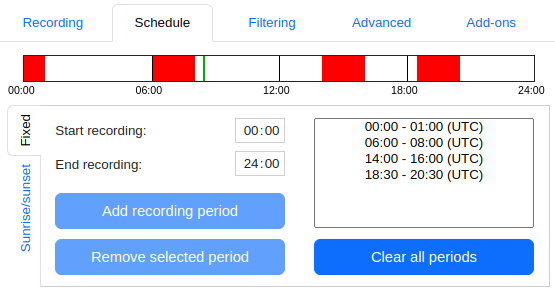

Recording Settings
We are using Audio Moths to record animal sounds in the city of Leiden. The recordings are made at different locations and times to capture a variety of species. The recording devices are set to record at specific times of the day.
See the image below for the recording schedule:
The segments in red correspond to times when the device will be recording. The device will sleep during the segments in white. When recording, the device will record for 30 seconds and then sleep for 30 seconds. This will be repeated for the entire recording period.
Recordings are made up to 24 kHz, which approximately corresponds to the human hearing range. We have selected 6 locations in the city of Leiden to record animal sounds. Recordings will be made at these locations for 2 months. After the recordings are made, we will analyze the data to identify the species present in the recordings. This will allow us to understand the biodiversity of the city and how it changes over time and between locations.
The project locations and recording settings have been agreed to in correspondence with the city of Leiden.